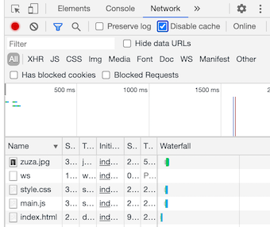

O mnie
Pracuję w firmie IT, w której większość deweloperów zajmuje się
frontendem. Postanowiłam ukończyć ten kurs, aby poznać lepiej ich pracę i
zrozumieć czym zajmują się na co dzień i z jakimi problemami się
stykają. Być może, jeśli będzie mi dobrze szło, rozważę ukończenie
również innych kursów. Na czym polega html? Kliknij link, aby przejść do
do notatek o html. Nauka html
Jeśli chcesz dowiedzieć się więcej, sprawdź to sam/a na stronie
WTF.
To jest moja pierwsza strona html.
Notatki
Tutaj będę zawierać najważniejsze informacje z każdego tygodnia -
czego się nauczyłam. W ramkach umieszczę ciekawe przykłady
zastosowania lub definicje, które sprawiają mi największy problem.
Sposób zapisu, czyli opowieść o wielbłądzie, kebabie, wężu i Pascalu
W naszym kursie możemy posługiwać się różnego rodzaju zapisami, jeśli
chcemy użyć kilku słów jednocześnie. Pierwszym z nich jest camelCase,
który jak widać pierwsze słowo ma pisane z małej, a drugie (i kolejne)
z wielkiej litery. Drugim przykładem jest kebab-case, w którym słowa
oddzielamy myślnikiem niczym elementy szaszłyka patyczkiem lub
szpikulcem. Kolejny sposób zapisu to snake, czyli wąż, w którym
kolejne słowa pisane są małą literą i oddzielone podkreślnikami.
Ostatni sposób zapisu to Pascal, gdzie wzszystkie słowa są pisane
wielką literą bez spacji.
mySuperBoldHeader to camelCase
my-super-bold-header to kebab-case
my_super_blod_header to snake_case
MySuperBoldHeader to PascalCase.
Do zapamiętania z pierwszej lekcji - opowieść o sąsiadach
Warstwy we frontendzie można porównać do sąsiadów mieszkających
na różnych piętrach domu. Zaczynamy od treści (tekstu), który znajduje
się na parterze. Nad nim znajduje się html, za pomocą którego
przenosimy tekst czy treść na stronę. Nad nim znajduje się css, który
może wpłynąć na to jak html będzie wyglądał, np. jakiej czcionki
użyjemy i jakiego będzie koloru. Nad nim znajduje się javascript,
która może wpływać na wszystkich sąsiadów zalewając ich mieszkanie
wodą. JS służy do wydawawania poleceń i zamieniania treści na
działania.
Życie w terminalu
Terminal, czyli tzw. czarne okienko jest uruchamiany
przez kliknięcie command+spacji i wybranie spotlight (na macu).
W Visual Studio należy wybrać
comm+shift+p i shell command in PATH.
Podstawowe komendy
w terminalu to cd, które przenosi nas do odpowiedniego katalogu np.
cd dev/ homepage.
ls enter pokazuje rzeczy z katalogu domowego
ls-l pokazuje
listę wszystkie rzeczy
cd spacja.. (cd ..) pozwala na powrót
do katalogu wyżej, a cd ../ .. o dwa katalogi wyżej
mkdir
pozwala na stworzenie nowego katalogu
pwd pozwala pokazać całą
ścieżkę
code . uruchamia visual studio code w katalogu
homepage.
Nad ranem znaleźli młodego GIT-owca
GIT otwierany jest w okienku terminala.
GIT jest systemem kontroli wersji, który jest pomocny, gdy np.
skasowaliśmy przypadkowo plik, chcemy dokonać zmian, przywrócić
wcześniejszą wersję lub chcemy pracować nad projektem grupowym.
Na dysku mamy jedynie aktualną wersję kodu.
Podstawowe komendy:
git version - wersja git
git config
--global user.name "" oraz git config --global user.email pozwalają
ustawić konfigurację.
git config --get user.name i git config
--get user.email pozwalają sprawdzić, czy nazwy podane w
konfiguracji.
commit (commit -m "") pozwala zapisać zmiany,
które mają być "zacommitowane"
git status pozwala sprawdzić
aktualny stan plików i podejrzeć, co można zapisać
git init
pozwala utworzyć nowy katalog (repozytorium)
podstawowy flow
prac z gitem to git status git add. git commit -m"" git push.
Polecenie git push pozwala "przepchnąć" zmiany do GitHuba.
U mnie nie działa - debugging
Nazwa pochodzi od odpluskwiania mieszkań, ponieważ pluskwy sprawiały,
że nie działał prąd. Możesz przetestować poniższe kroki, by naprawić
kod:
-
sprawdź, czy plik jest zapisany
-
sprawdź, czy edytujesz prawidłowy plik :)
-
sprawdź, czy odświeżyłaś/ eś przeglądarkę - na Macu cmd+shift+r, na
Windowsie i Linuksie - ctrl+F5.
-
sprawdź, czy nie masz błędów w edytorze kodu (w edytorze i w
validatorze) i dev tools (console)
-
możemy się odwoływać do złego źródła, np. zmieniliśmy nazwę linku w
edytorze lub zrobiliśmy literówkę w nazwie obrazka
-
czytaj ze zrozumieniem podpowiedzi błędów w terminalu,
validatorze, w problems w edytorze itp.
-
sprawdź to w Google i przetestuj, ważne, by szukać w miarę
aktualnych artykułów (nie warto sprawdzać w3schools, NIE jest to
oficjalna strona W3), lepiej skorzystać ze strony
Stack overflow
Wchodząc w dev tools w część network można też u góry kliknąć opcję
"disable cache", aby pliki pobierały się z właściwych miejsc

Life hack - jeśli nie działa opcja "upiększania" kodu shift+option+f
na Macu w edytorze, to znaczy, że jest jakiś błąd, najczęściej w
znacznikach (np. niezamknięty nawias)
Inne przydatne linki